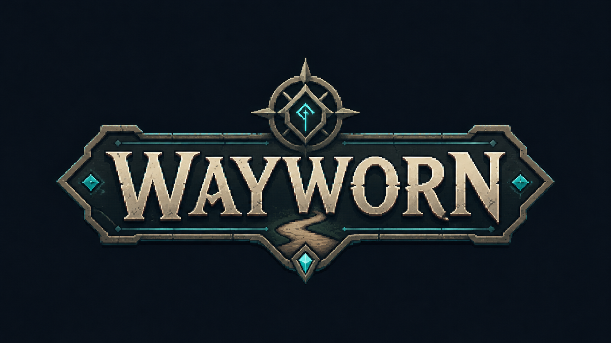
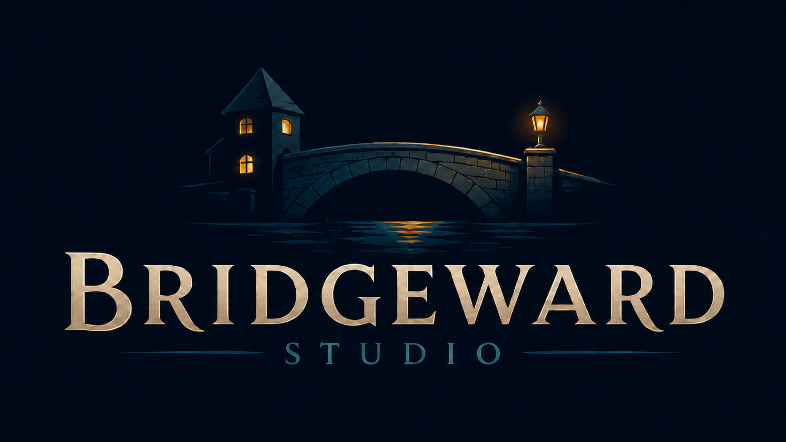

Classic Fantasy
Heroes, classes, dangerous roads, haunted ruins, and a world that feels built to explore.
Small indie studio from Hungary

A classic fantasy MMO about old roads, lost crowns, dangerous wilds, and the heroes who still choose the long way forward.
The game
Wayworn is being built as an old-school fantasy MMO with playable races, character classes, questing, dungeons, and a growing open world centered around crossroads, frontier towns, ancient places, and the threats waking beneath them.
Heroes, classes, dangerous roads, haunted ruins, and a world that feels built to explore.
Designed around shared spaces, player progression, quests, enemies, and future group content.
A personal project growing from late-night ideas, experiments, and a love for MMO worlds.
Playtest build
Download the current Windows setup for Wayworn. This is an early development build, so expect rough edges while the world grows.
Open Download PageThe studio
The name comes from a place close to home in Hungary, a pub called Hidfo, where many of the ideas behind the project took shape with a friend. Bridgeward keeps that feeling: crossing into something new, building from small beginnings, and following the road because the next zone might be worth it.

Ideas born at a table, then carried into a world of roads, ruins, and long evenings of building.